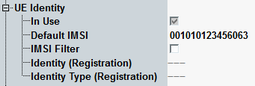

The "UE Identity" settings are related to UE identities like IMSI, IMEI and TMSI.
This section is not relevant for reduced signaling.

Specifies whether the default IMSI defined in this dialog is used. Setting up a call without registration is only possible if the correct default IMSI is set and enabled.
Before registration, the default IMSI is always enabled and cannot be disabled manually. During registration of a different IMSI, the default IMSI is disabled automatically. Afterwards you can re-enable the default IMSI manually if necessary.
Remote command:15-digit international mobile subscriber identity (IMSI) that the instrument can use before the UE is registered. With an appropriate UE configuration, this IMSI can be used as well to speed up the paging procedure (see also "Attach/Detach").
Remote command:If enabled, the R&S CMW allows only the default IMSI to execute location update and attach. The attempts of location update and attach executed by other UEs are suppressed.
Remote command:Display the ID and ID type received from the UE during registration. The format of the ID depends on the ID type: IMSI, IMEI, IMSISV, TMSI, or none.
Remote command: